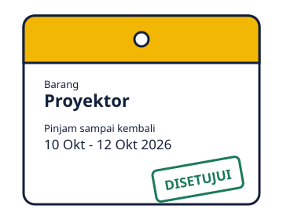

Cek stok dulu, baru ajukan pinjam.
Peminjaman barang di Fakultas Vokasi UNESA, dari pengajuan sampai pengembalian, tercatat di satu tempat.

Alur peminjaman
- Pilih barang dan cek tanggal. Lihat sisa stok pada rentang tanggal yang kamu butuhkan.
- Ajukan peminjaman. Isi tanggal pinjam, tanggal kembali, dan keperluan.
- Admin memverifikasi. Pengajuan disetujui atau ditolak, statusnya bisa dipantau.
- Barang dikembalikan. Admin mencatat tanggal dan kondisi barang.